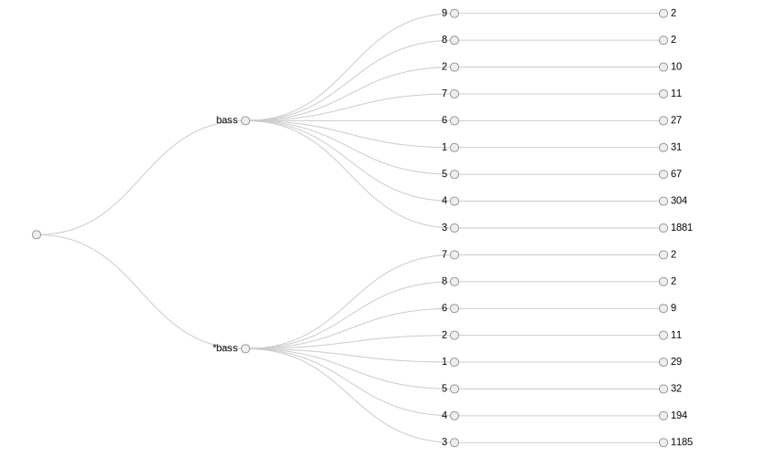

Sankey diagram of rule distributions for word sense disambiguation
Crazy long title, I know, but it’s not as complicated as it sounds. For my Natural Language Processing class we recently approached the problem of Word Sense Disambiguation from a Machine Learning perspective (we also looked at others, including lookup approaches like Lesk), using the simple, but effective, decision list algorithm. This is my attempt at visualizing the results.
The WSD task is determining which ambiguous meaning of a word is intended, usually based on the context, e.g. play bass guitar versus caught a largemouth bass.
In order to accomplish this we look at the words surrounding the text looking for hints like part of speech (which can be derived from a pre-trained tagger) and words, so for example a rule could be +1 word is guitar or -2 word is a common noun (NN), where +/- k is relative to the ambiguous word in question.
From here we go through the entire training corpus creating a conditional probability distribution of all possible rules with the appropriate sense marked (using the notation word and word* for the two senses). With the distribution of rules we can than easily rank their effectiveness using the log likelihood formula given below:
$$ \left|{\log_2{\frac{Pr(word \mid rule)}{Pr(word* \mid rule)}}}\right| $$
The idea here is that rules that are equally common across the senses don’t give us any real information so they’ll get low likelihoods (e.g. determiners like the), whereas ones that occur frequently with just one sense get high likelihoods (e.g. specific content words like guitar).
Given this list of rules with their relative ranks we can sort them by log likelihood. This is why we took the absolute value before, because rules weighted towards sense* will be negative and we want to sort by magnitude. Using the algorithm is as simple as running a sample sentence through the list of rules accepting the first one to find a match.
| * | | * |
| b b | | s s |
| a a | | a a |
| s s | | k k |
| s s | | e e |
------+-------+ ------+-------+
bass* |<40> 4 | sake* | <3> 3 |
bass | 4 <52>| sake | <94>|
------+-------+ ------+-------+
(row = reference, col = response)
Confusion matrices for both cases. The rows are what the answers should have been, columns are what the algorithm chose, so choices along the diagonal are correct.
Usually the results of the algorithm on an untouched test corpus are reported as a confusion matrix or histogram, along with some raw stats like error reduction over baseline or F-scores. While these are useful to understanding the performance of the algorithm, it does little to help you understand why it performs that way. Only the histogram gives you any idea about the data distribution and that’s the only thing it does.
That’s where my Sankey diagram comes in, traditionally these sort of diagrams are used to show how some distribution changes over time or distance. While in this case time is not particularly meaningful (the algorithm can train/test thousands of examples in a couple of seconds), there is a linear, step-by-step process at work and that’s where a flow diagram can be useful.
What I decided on for the final version was a three step process: rule distribution per word sense, likelihood distribution per rule (binned to integers), and finally accuracy distribution per likelihood. Here are the two final diagrams:
Note: you can hover over the links to see the exact numbers and you can drag the nodes around to get a better view of the various connections
The most obvious observation from this visualization is just how many low likelihoods there are in both cases (incidentally this is because the likelihoods of rules with just 1 example end up 3 for the bass case and 4 for the sake case), but also how few times they actually get applied.
One major assumption in this algorithm is that higher likelihood will have better results, how good is this assumption? We can’t tell that from the confusion matrix, but with the Sankey diagram every incorrect answer can be traced back to the rule’s likelihood that made a mistake. Here we can see that no rule with a likelihood greater than 5 ever makes a mistake in both cases, which shows that the assumption is not only pretty good, but also consistent across use cases.

Another takeaway is how few rules we have for the sake* case and also how low in the decision list those that exist are. This shows an non-obvious limitation of the algorithm, it needs similar distributions of data. Even though this algorithm performed “better” in overall accuracy then the bass case, it still only got 50% of the sake as in wine cases correct.
My first attempt (incomplete version shown to the right) was the straight forward Reign-Gold tree diagram with labelled nodes. This admittedly shows the exact numbers immediately (without hover over), but it loses the high level visual cues of size and is not interpreted necessarily as a temporal flow like the Sankey approach.